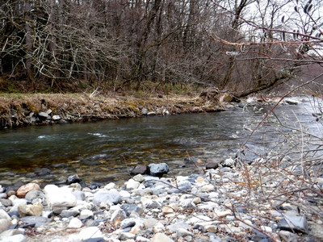

釣行日誌 故郷編
2019/04/21 桜と花桃、迷いの敗退
今朝はいつもより早く、６時に叔父が迎えに来てくれた。いそいそと大荷物を積み込み、片道200kmのドライブとなる。昨年までは重くてかさばるCDケースを持ち込んでいたのだが、今年はFMトランスミッターと音楽プレーヤーで身軽にお気に入りの楽曲をドライブ中に楽しむのだ。しかし、いざトランスミッターをシガーライターソケットに差し込んでプレーヤーに接続し、あれこれといじってみるが音がステレオから出てこない。取扱説明書を置いてきたので、しばし試行錯誤していろいろボタンを押していると、ようやく竹内まりやの歌声がスピーカーから流れ出した。簡単なものでも、慣れない電子機器には苦労させられる。（笑）
峠をいくつも越えて、街道へ出ると、国道沿いに桜と花桃が満開である。今年度の第１戦に心も弾む。
途中のコンビニで、昼食のお弁当と入漁券を買う。ものの勢いで、ついつい年券を購入してしまった。これで、今シーズン５回は釣りに来ないとモトが取れないことになる。（笑）
叔父が今日は腰が痛いとのことで、コンビニからは僕が運転した。僕らが住んでいる東三河地方は、冬からの小雨で、流域は渇水、各ダムは軒並み非常な低貯水量となっていた。この様子では、いつもの高原の沢は水が少ないだろうということで、叔父と相談して別の谷に車を向けた。去年、熊とニアミスをした橋のたもとの空き地に停める。辺りの木立はまだ冬模様で葉を付けておらず、冬枯れの景色が広がる。下草も茂っていないので見通しが良く、黒い生き物が動いていたならすぐに気が付くだろう、と安心した。熊よけスプレーもしっかり持っているし。
昨年のニュージーランド釣行で、フライの腕がなまってしまっていた（というか、もともと無かった実力が露呈した）ことに気づいたので、今年はフライを一生懸命やろうと決心して来た。
今日のタックルは、まだ寒いし、ウェットフライとストリーマーを使うつもりで、５番のDTフローティングラインに、キルウェルの８ft：４番ロッドである。ルアーでは釣りのペースが速く、足腰の弱ってきた叔父には長距離の川歩きは無理なので、叔父と別れて一人で釣り下ることにしてもらった。待ち合わせは幹線道路の橋で、午後5:00にした。
タックルをセットして、橋の上から覗くと、なんと意外な増水であった。数日前にこの流域ではけっこうな雨が降ったらしい。いつもの堰堤に降りてゆき、7.5ft、4Xリーダーの中間部に見よう見まねで蛍光の黄色とオレンジ色の視認性の良いセクションを加えた自作リーダーを振り込む。これはフレンチ・スタイルのニンフィングで使う仕掛けの応用なのだが、何せウェットフライでは過去に１尾だけスレで釣ったことしか無い人物のやることなので、大目に見て頂きたい。（笑）
堰堤下のブロックの流れ込みに、長い年月をフライボックスで眠っていた名も知らぬウエットフライを振り込む。いつものミノーに比べれば非常に頼りの無い感触しか伝わってこないので、これで本当に釣れるのか？ と、疑心暗鬼になる。フライの在処はまったく分からず、黄色とオレンジ色のリーダーだけが頼りである。流れに乗せて、リーダーの先端とコンタクトを失わないよう扇形に流してゆく。希望的観測としては、どこかでカクンッ！とアタリが出るはずなのだが、ピクリとも反応が無い。
流れ込みでは何も起こらなかったので、右側の藪下を攻める。フライを送り込み、アクションを付けながらゆっくり逆引きでリトリーブしてくる。やっていることはまるでルアーの釣り方だ。本当にこれで大丈夫か？
昨年の春に大物を釣り上げて、惜しくも写真を撮る前に逃げられた淵の左側のブロックめがけ、交換した黒いウーリーバガーを遠投する。ケチってDT5Fを半分に切ってリールに巻いてきたので、なんなくフル（ハーフ）ラインが出てしまう。（笑） それらしいポイントに投射し、ロッドティップで小刻みなアクションを加えながら、ラインをストリッピングして手繰り寄せる。何も反応は無い。小物の魚影も見えない。
ルアーとはあまりに勝手が違いすぎて面食らいつつ、藪漕ぎをして下流へ向かい、崖から水辺に降り立つ。熊よけの笛を夢中で吹くことだけは忘れない。（笑）
いつもなら何かしらの反応が期待できる枝下のポケットでも岩魚は出ない。じゃぁだんだんと釣り下って行こうか、と思って足を進めた瞬間なぜかバランスを崩していきなり転倒！ 左右のウェーダーに水が入り、両足と右腕がずぶ濡れになる。高原の川の水はとても冷たく、寒い寒い！！ 冬に新調した、コーデュラナイロン生地のネオプレンストッキングタイプのウェーダー（太腿までの長さ）は、履くのに手間がかからず歩きやすくてなかなか良いなと思っていたが、転ぶと簡単に浸水することが判明した。そりゃ当たり前だ。チェストハイタイプと比べてはいけない。
いつもこの川で釣る時には、叔父と二人釣りやすいポイントを選んで車で移動しつつ攻めていたので、ウェストバッグの中に着替えを持っていない。しかたなく寒さに震えながら釣りを続ける。
昨年背曲がりの良型イワナが出たポイントでも沈黙は続き、小堰堤の落ち込みでも何も起こらない。おかしいなぁ....
夢中になって釣っていたら、昼時を大幅に過ぎており、午後1:30に遅いお弁当タイムとする。とりあえずウェーディングシューズとウェーダーを脱ぎ、ジャバッと水を出してから、また履き直す。寒々とした木立の中で、１人おにぎりを頬張る。これで１尾でも釣れていたらなぁ。とため息が出た。

小沢の出会いから下は、長細い淵が続いていたので、今度はフライをニンフに替え、本とDVDでにわか仕込みをしたヨーロピアンスタイル・ニンフィングに挑戦してみる。いろいろ情報を詰め込みすぎたせいで、かえって本質を見失っており、釣れる気がしない。（笑） しかるべきポイントに、ほとんど本来のフライキャスティングは行わず、餌釣りの要領でロッドを動かして重いニンフを振り込む。そして、フライからのコンタクトを失わないようにティペットとリーダーを張りつつドリフトさせてくる。蛍光色のインジケーターセクションを注視していると時折ピクンと動くが、全て石である。（笑）
しかし、とりあえず、全ての反応に合わせを入れてみる。半分くらいは石にニンフが掛かってしまう。
『どうも、この釣り方はもはや餌釣りと言った方が良いのではないか？』
魚が喰い付けばそんな疑問も生まれず、ますますのめり込むのだろうが、いかんせん結果が出ないと迷いが生じる。
幹線道路の橋まで来たので、そこの下の淵では性懲りも無くインジケーターの釣りに変更した。（笑） 派手なオレンジ色のプラスチック製小型タイプを、リーダーとティペットの中間部に１つ取り付ける。これはこれでキャスティングの面白さは味わえるが、自然に流すのとアタリを感知するのが難しい。
要は、色々と技法を替えても実力の無さはカバーしきれないことが証明されただけであった。（泣）
橋の下流に続く長い深みは後で攻めることにして、500mほど下流まで迂回して歩き、別の堰堤下の淵を狙ってみる。たっぷりとウェイトを巻き込んだヘアー・アンド・コパーを、目を三角にして淵の底に沈めていると、流心脇のポケットで小さなライズがあった。
『ええ？ こんなに寒くてライズするの？』
あまり大きくは無い、というかかなり小型のイワナだったが、ミッジを狙って水面まで出てきたようだった。
『ううむ....なんとまぁ腹の立つこと....』
ニンフには出ないし、せっかくコンビニで買った行動食のカロリーメイトをウェストバッグに入れるを忘れてしまい、空腹でいささか集中力が無くなってきた。それでも！ と気合いを入れ直し、さらに下流の護床ブロック脇を再びウェットフライと黒のウーリーバガーで攻めてみる。もはや苦し紛れ以外の何ものでも無い。
案の定、何も反応は無く、フライが空しくリトリーブされてくるだけであった。
仕方が無いので踵を返して上流に向かい、今度はニュージーランド式の白い小さなヤーン・インジケーターを付けて、アップストリームのニンフで長淵に挑む。心地よくロングキャストして、水面の白いヤーンが流れに乗って漂ってくる。時折、ピクンと動くが、またしても石であろう。しかし、いつイワナが喰い付くかも知れないので、念を入れて合わせてみる。
『ああ、ニンフは神経を使うなぁ....』
思わず弱音が漏れてくる。
長淵脇の藪沿いの深みも注意深く攻めたが、魚の気配が無い。今日は１日ツキに見放されたかのようだ。
そうこうしていると、叔父との待ち合わせ時間になったので、土手に上がり、橋に向かう。橋詰めで叔父を待つ。もう５時を回っていたが、青いスズキは現れない。
『ひょっとしたら....』
なにせ、心臓に持病があり、常に薬を持ち歩いている人なので、いささか心配になり、不安のひとときを過ごす。5:15になっても来ないので、電話してみると、間違えて１本下流の橋で待っていたようで、今からこちらへ向かうと返事があった。このまま叔父が現れなかったら、警察と消防に電話して、夜通しの捜索か、明日になってからの捜索になるか、などと想像していたので一安心した。（笑）
帰途は、相変わらずの与太話と思い出話にふけり、いつものガストで夕食をいただき、眠気覚ましのコーヒーを飲んで長距離ドライブで帰ってきた。
次回は必ずリベンジを！ と叔父に告げ、重い荷物を担いでドアを開けた。午後11:00を過ぎていた。
釣行日誌 故郷編 目次へ
サイトマップ
ホームへ
お問い合わせ